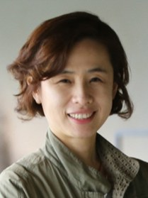
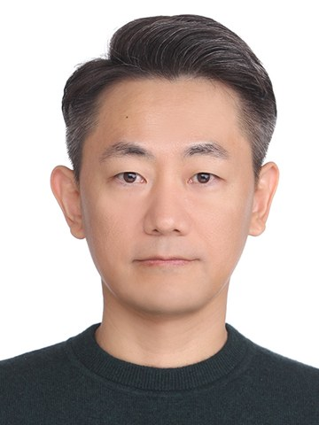

구윤경교수
기생충학·열대의학교실
경북대학교 일반대학원
의과학과에서는 기초의학과 임상의학 교수님들이 함께 대학원생을 지도해요. 관심 가는 연구 주제를 찾아보고, 링크를 눌러 연구실을 더 알아보세요.
2026년 10월 기준 · 사진과 소속은 경북대 의과대학 홈페이지, 연구 소개는 교수님 실적 자료와 공개 프로필을 바탕으로 정리했어요.
의과학과 교수진
기생충학·열대의학교실

기생충학·열대의학교실

면역학교실
담당자 김예리
yell_90@knu.ac.kr
유전자 변화는 어떻게 신경과 근육의 질병으로 이어질까요? 감각신경생물학·대사 연구실은 유전자 조절과 미토콘드리아 기능을 중심으로 질병의 비밀을 탐구합니다. 유전체 분석부터 세포·동물모델 실험까지, 다양한 접근으로 질병의 원인을 밝히고 새로운 치료의 가능성을 찾아갑니다.

면역학교실

면역학교실

면역학교실
담당자 이종걸
jglee@knu.ac.kr
생식유전생물학연구실은 임신이 시작되는 과정을 세포·분자 수준에서 연구합니다. 자궁내막의 탈락막화, 배아 착상, 태반 형성에 주목하며, 사람 유래 세포모델과 동물실험을 통해 환경유해물질이 초기 임신에 미치는 영향과 난임·임신성 질환의 원인을 탐구합니다.
의과학과 교수진

면역학교실

미생물학교실
담당자 조경민
gmj350124@naver.com
AMR & Phages Lab은 항생제 내성(AMR) 극복을 위해 박테리오파지(Phages) 기반 차세대 항균 치료 기술을 연구합니다. 합성생물학 기반 파지-항생제 시너지 및 정밀 전달 시스템을 개발하여 난치성 세균 감염 제어의 혁신을 이끕니다.

미생물학교실

미생물학교실

미생물학교실

미생물학교실
의과학과 교수진

미생물학교실

병리학교실

분자의학교실
담당자 김정은
kjeun@knu.ac.kr
Skeletal Connectome Lab은 골격을 중심으로 근육·힘줄·신경·호르몬의 연결과 상호작용을 연구합니다. 뼈세포의 기능, 호르몬에 의한 근육·힘줄 조절, 근골격계·대사 질환, 암의 뼈 전이 및 비만 관련 유전자 기능을 탐구합니다.

분자의학교실

분자의학교실

분자의학교실
의과학과 교수진

분자의학교실

분자의학교실

분자의학교실
담당자 김은경
kek8735@knu.ac.kr
유전체의학 연구실은 단일세포·공간전사체·미생물군집 등 오믹스 빅데이터로 질병을 이해하는 연구실입니다. 연구실 RPG HaLab Quest에서 분야 탐색부터 연구까지의 여정을 미리 체험해 보세요.

생리학교실

생리학교실
담당자 한완희
wanuni2004@naver.com
환자 샘플 분석부터 정밀한 동물 모델 검증을 통한 신약개발까지! 배재성 교수 연구실은 스핑고지질대사 조절을 축으로 알츠하이머병을 비롯한 뇌 및 전신 대사질환의 병인 기전을 규명합니다. 깊이 있는 기초 실험과 중개연구를 통해 실질적 치료제 개발을 합니다.

생리학교실
의과학과 교수진

생리학교실

생화학·세포생물학교실

생화학·세포생물학교실

생화학·세포생물학교실

생화학·세포생물학교실

생화학·세포생물학교실
담당자 박민
010-3689-0321
최제용 교수 연구실은 근골격조직에서 RUNX/CBFβ의 기능을 분자유전학 및 유전자 발현 조절 접근법으로 연구합니다. 골광화와 같은 생리 현상은 물론 골다공증·골관절염 등 근골격계 질환의 진단과 치료법 개발에 몰두하며, 일본, 미국, 중국 등과 활발히 국제 공동연구를 수행하고 있습니다.
의과학과 교수진

생화학·세포생물학교실
담당자 허근
keunhur@knu.ac.kr
허근 교수 연구실은 대장암 및 간암의 발생과 전이 기전을 연구합니다. 비암호화 RNA, 엑소좀, RNA 메틸화와 오가노이드 모델을 활용하여 암 조기진단 바이오마커와 새로운 치료 표적을 발굴합니다.

약리학교실

약리학교실

약리학교실
담당자 이화림
hrl@knu.ac.kr
3D 에서는 모든 생명 현상이 달라집니다. 우리는 바이오프린팅으로 체외모델을 만들고, 세포에서 조직, 인체까지 아우르는 메커니즘을 분석하여 질병연구, 신약개발과 4D 인공장기까지 도전합니다.

해부학교실

해부학교실
의과학과 교수진

해부학교실

해부학교실
의과학과 교수진

내과학교실

내과학교실

내과학교실

내과학교실

내과학교실
담당자 박한기
haan33@naver.com
장관면역-염증조절 실험실은 장-폐 축을 중심으로 장내 환경, 마이크로바이옴, 장점막면역이 천식 등 원격 장기의 만성염증을 어떻게 조절하는지 연구합니다. 환자 검체와 세포·동물모델을 활용해 장-폐 간 면역세포 이동과 미생물·대사체의 점막 방어 기전을 밝히고, 새로운 질환 조절 전략을 찾고자 합니다.

내과학교실
의과학과 교수진

내과학교실

내과학교실

내과학교실

내과학교실

마취통증의학교실

비뇨기과학교실
의과학과 교수진

비뇨기과학교실

산부인과학교실

성형외과학교실

신경과학교실

신경과학교실

안과학교실
의과학과 교수진

안과학교실

영상의학교실

외과학교실
담당자 김혜정
khj8232@knu.ac.kr
대장암을 비롯한 다양한 암을 대상으로 세포외소포(EV), 액체생검 및 분자진단 기술을 활용한 바이오마커 발굴과 조기진단을 연구합니다. 또한 AI 기반 항암제 독성 예측과 정밀의료 기술 개발을 통해 기초연구의 임상 적용을 목표로 합니다.

융합연구진료센터
담당자 김도향
kmdh77@knuh-ext.kr
국가 빅데이터를 활용한 암 발생·예방 연구와 환자유래 오가노이드, 단일세포·공간전사체 및 다중오믹스 분석을 통해 소화기암의 발생 기전과 치료저항성을 규명하고, 정밀의료를 위한 바이오마커 발굴 및 임상 적용을 위한 융합연구실입니다.

융합연구진료센터

융합연구진료센터
담당자 정현준
hjjung@knu.ac.kr
시스템생리학 연구실은 다양한 생리적 환경에서 세포의 상태와 기능 변화를 연구합니다. 다중오믹스 통합 분석과 시스템생물학·계산생물학적 접근을 통해 세포 상태의 이질성과 역동적 변화에 기반한 질병 발생 기작을 이해하고, 정밀의학을 위한 진단 및 치료 전략을 탐구합니다.
의과학과 교수진

정신건강의학교실
담당자 이태영
tylee@knu.ac.kr
계산정신과학연구실은 정신질환이 왜 생기고 어떻게 치료할지를 뇌영상·뇌파·AI·계산모델로 연구합니다. 고위험군부터 조현병·기분장애까지 종단 코호트, 치료저항성 기전, 뇌자극치료를 연구합니다. 코딩·데이터분석에 관심 있는 타전공생도 적극 환영합니다.

정형외과학교실

피부과학교실

핵의학교실